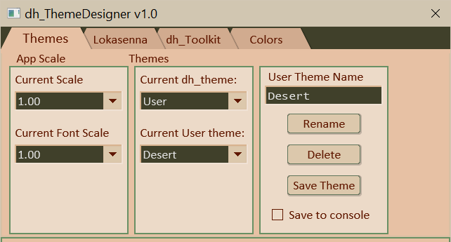

Current Scale: Making a selection from this selection box scales the script window, including all elements and fonts.
Current Font Scale: Making a selection from this selection box scales all of the script's fonts relative to 'designed' size. This is included in case a system font's size is different than that of the system the script was designed on. (The font size of native menuboxes and message boxes will not change as they are determined by the system.)
Use Outlines: Use this checkbox to specify the type of outlines to use. The text elements, knob and slider display boxes, and slider track normally use a highlight/lowlight frame derived from the background color. Alternately, the frames can use a single color outline specified the theme's 'elm_frame' color. Check the box to use the latter. (Themes have a false color 'metadata' which is used to specify that the GUI is to always use the single color option.)
Thick Frames: Use this checkbox is used to specify if thinner or thicker outlines should be displayed. As of 04-16-2026 they are 1 pixel or 2 pixel width.
Changing a theme will replace the current 'edit state' with the colors of the selected theme. Be sure to save your work first if so desired. You will be prompted to confirm a theme change.
Current dh_theme: Use this menubox to select a dh_Toolkit theme. The theme is loaded upon selection. Changing themes will overwrite the current 'edit state', replacing it with the selected theme's colors. You will be prompted to confirm. If "User" is selected it displays the "Current User theme" menubox (if there are any user themes). Use that menubox to select a user theme. Same rules apply.
The "User Theme Name" textbox displays the name of the last selected theme when that theme was selected. The name is displayed as a convenience. It can be used as a basis for a new name when saving the currently edited theme. Type in or edit the name as you see fit.
The "Rename" button is used to rename the current user theme (the one displayed in the "Current User theme" menubox) with the name in the "User Theme Name" textbox. You will be prompted to confirm.
The "Delete" button is used to delete the user theme (the one displayed in the "Current User theme" menubox). You will be prompted to confirm.
The "Save Theme" button is used to save the current 'edit state' of the theme being edited. It will be saved using the name in the "User Theme Name" textbox. If the "User Theme Name" already exists it will attempt to overwrite the existing user theme. You will be prompted to confirm an overwrite.
The "Save To Console" checkbox determines if the saved theme is also displayed in Reaper's script console. Check it to also print user theme to script console when saving.